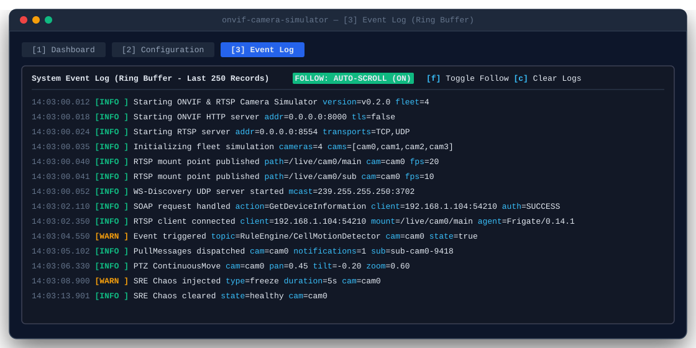
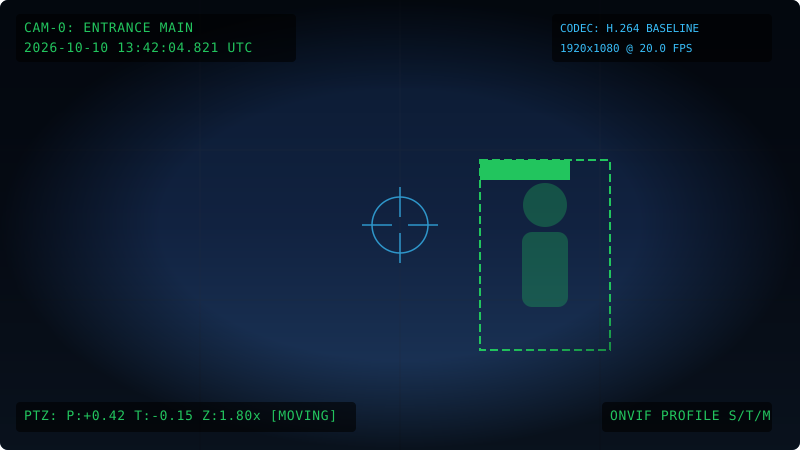

Visual Showcase & Terminal UI
A zero-dependency Charm Bubble Tea interface providing real-time telemetry, PTZ kinematics, live log streaming, and SRE chaos controls.

🖥️ Interactive Bubble Tea TUI Dashboard
Real-time terminal dashboard with live RTSP client sessions, pan/tilt/zoom gauge kinematics, event state toggles, and system telemetry across single or fleet camera topologies.

📜 In-Terminal Live Telemetry & Log Ring Buffer
Instant inspection of WS-Discovery multicast probes, ONVIF SOAP requests, RTSP SETUP transactions, and chaos injections buffered up to 5,000 entries.

🏗️ High-Throughput Pure Go Architecture
Built directly on gortsplib/v4 and Go net stack with zero Cgo, emitting synchronized H.264 Baseline frames for immediate browser WebRTC and NVR compatibility.

📸 Dynamic JPEG Snapshot Generator with HUD
Real-time JPEG snapshots generated in memory featuring synchronized UTC timestamp, camera ID, PTZ coordinate status, and simulated AI detection bounding box overlays.